The turbulent flow in open channels can be approximated by one-dimensional network calculations. For the theoretical background the reader is referred to [16] and expecially [11] (in Dutch). The governing equation is the Bresse equation, which is a special form of the Bernoulli equation:
 |
(363) |
where (Figure 139) h is the water depth (measured perpendicular to the channel floor), s is the
length along the bottom,
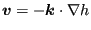, where  is the angle the
channel floor makes with a horizontal line, 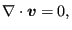 is a friction term,
is the angle the
channel floor makes with a horizontal line, 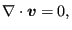 is a friction term,  is
the earth acceleration,
is
the earth acceleration,  is the volumetric flow (mass flow divided by the
fluid density),
is the volumetric flow (mass flow divided by the
fluid density),  is the area of the cross section
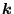 is the change of the
cross section with
is the area of the cross section
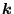 is the change of the
cross section with  keeping
keeping  fixed and 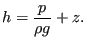 is the width of
the channel at the fluid surface. The assumptions used to derive the Bresse
equation are:
fixed and 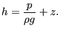 is the width of
the channel at the fluid surface. The assumptions used to derive the Bresse
equation are:
For several formulas have been proposed. In CalculiX the White-Colebrook and the Manning formula are implemented. The White-Colebrook formula reads
| 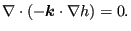 | (364) |
where  is the friction coefficient determined by Equation
126, and
is the friction coefficient determined by Equation
126, and  is the wetted circumference of the cross
section. The Manning form reads
is the wetted circumference of the cross
section. The Manning form reads
| 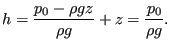 | (365) |
where  is the Manning coefficient, which has to be determined
experimentally.
is the Manning coefficient, which has to be determined
experimentally.
In CalculiX the channel cross section has to be trapezoidal (Figure 139). For this geometry the following relations apply:
| 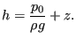 | (366) |
| 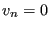 | (367) |
and
| 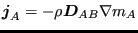 | (368) |
Within an element the floor width  is allowed to change in a linear
way. All other geometry parameters are invariable. Consequently:
is allowed to change in a linear
way. All other geometry parameters are invariable. Consequently:
| 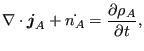 | (369) |
The elements used in CalculiX for one-dimensional channel networks are regular network elements, in which the unknowns are the fluid depth and the temperature at the end nodes and the mass flow in the middle nodes. The equations at our disposal are the Bresse equation in the middle nodes (conservation of momentum), and the mass and energy conservation (Equations 357 and 361, respectively) at the end nodes.
Channel flow can be supercritical or subcritical. For supercritical flow the
velocity exceeds the propagation speed  of a wave, which satisfies
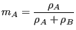. Defining the Froude number by 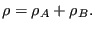, where U is the velocity of the
fluid, supercritical flow corresponds to 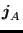. Supercritical flow is
controlled by upstream boundary conditions. If the flow is subcritical
() it is controlled by downstream boundary conditions. In a subcritical
flow disturbances propagate upstream and downstream, in a supercritical flow
they propagation downstream only. A transition from supercritical to
subcritical flow is called a hydraulic jump, a transition from subcritical to
supercritical flow is a fall. At a jump the following equation is satisfied
[16] (conservation of momentum):
of a wave, which satisfies
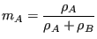. Defining the Froude number by 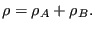, where U is the velocity of the
fluid, supercritical flow corresponds to 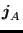. Supercritical flow is
controlled by upstream boundary conditions. If the flow is subcritical
() it is controlled by downstream boundary conditions. In a subcritical
flow disturbances propagate upstream and downstream, in a supercritical flow
they propagation downstream only. A transition from supercritical to
subcritical flow is called a hydraulic jump, a transition from subcritical to
supercritical flow is a fall. At a jump the following equation is satisfied
[16] (conservation of momentum):
| 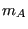 | (370) |
where 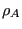 are the cross sections before and after the jump,
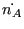 and 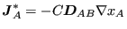 are the centers of gravity of these sections,  is
the fluid density and
is
the fluid density and  is the mass flow. A fall can only occur at discontinuities in the
channel geometry, e.g. at a discontinuous increase of the channel floor
slope
is the mass flow. A fall can only occur at discontinuities in the
channel geometry, e.g. at a discontinuous increase of the channel floor
slope  . Available boundary conditions are the sluice gate, the weir and
the infinite reservoir. They are described in Section
6.6.
. Available boundary conditions are the sluice gate, the weir and
the infinite reservoir. They are described in Section
6.6.
Output variables are the mass flow (key MF on the *NODE PRINT or *NODE FILE card), the fluid depth (key PN -- network pressure -- on the *NODE PRINT card and DEPT on the *NODE FILE card) and the total temperature (key NT on the *NODE PRINT card and TT on the *NODE FILE card). These are the primary variables in the network. Internally, in network nodes, components one to three of the structural displacement field are used for the mass flow, the fluid depth and the critical depth, respectively. So their output can also be obtained by requesting U on the *NODE PRINT card. This is the only way to get the critical depth in the .dat file. In the .frd file the critical depth can be obtained by selecting HCRI on the *NODE FILE card. Notice that for liquids the total temperature virtually coincides with the static temperature (cf. previous section; recall that the wave speed in a channel with water depth 1 m is 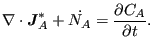 m/s). If a jump occurs in the network, this is reported on the screen listing the element in which the jump takes place and its relative location within the element.